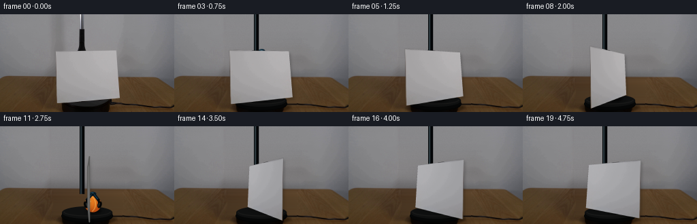
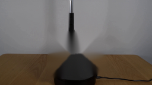
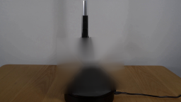
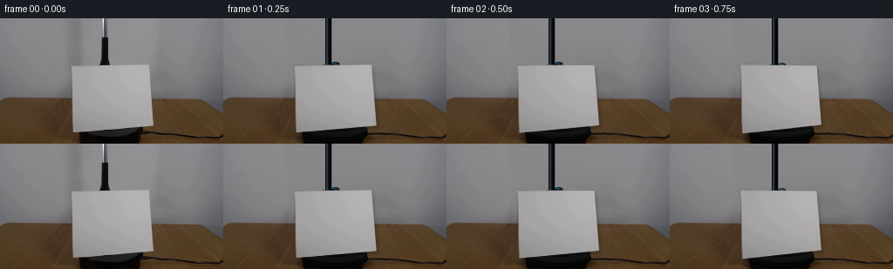
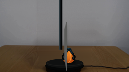
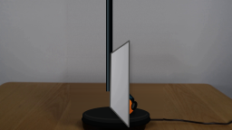
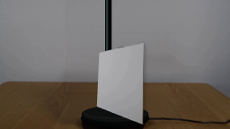
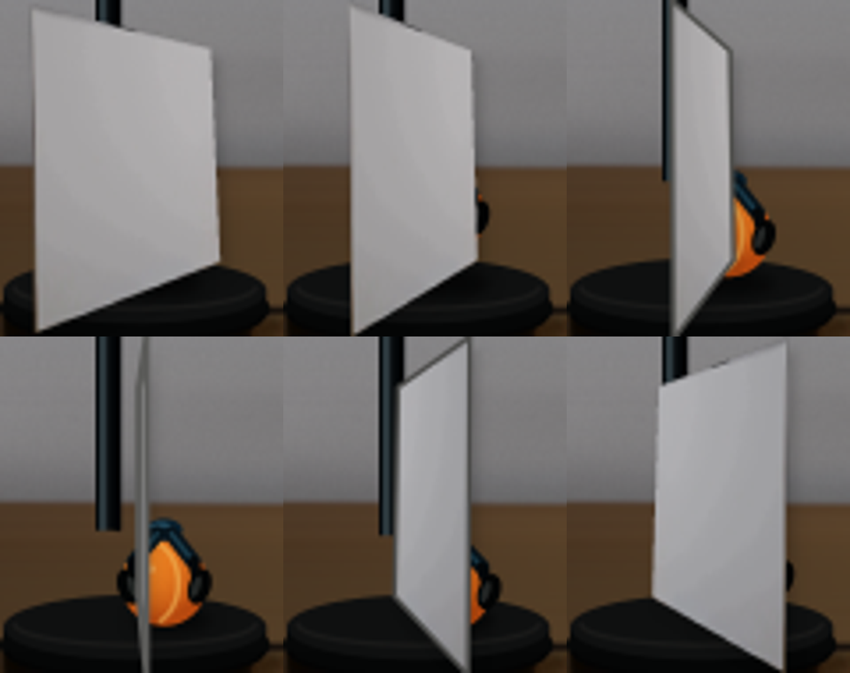

CODING AGENTS AS PIXEL WORLD MODELS
traex/GPT-5.6-Sol · 0005
点击播放 · 原生 RGB 像素
逐轮保存的候选
回放视频、检查图与代码变化。
每份候选均可单独播放。实际图片检查记录在下方工具轨迹中。
候选 01播放与检查图
点击播放 · 原生 RGB 像素

展开代码变化
--- 上一保存版本 +++ 本次保存版本 @@ -0,0 +1,219 @@ +from pathlib import Path +import cv2 +import numpy as np +from PIL import Image +import artifact_io + +# Analytic, deterministic reconstruction/animation of the photographed apparatus. +HERE = Path(__file__).resolve().parent +S = 4 +W, H = 256, 144 +rng = np.random.default_rng(1703) + + +def smoothstep(x): + x = np.clip(x, 0.0, 1.0) + return x*x*(3.0-2.0*x) + + +def clean_plate(src): + """Remove the foreground card/shaft while retaining the locked-off plate.""" + out = src.copy().astype(np.float32) + # The wall: interpolate actual pixels immediately to either side. This keeps + # the original exposure gradient and sensor noise, without an inpaint halo. + for y in range(0, 94): + xl, xr = 75, 183 + left = src[y, 67:77].mean(axis=0).astype(float) + right = src[y, 182:192].mean(axis=0).astype(float) + for x in range(xl, xr + 1): + a = (x-xl)/(xr-xl) + # smooth central wall illumination, sampled from both sides + out[y, x] = left*(1-a) + right*a + # Restore a tiny amount of photographic texture to the synthesized wall. + noise = rng.normal(0, 0.85, out.shape[:2]) + noise = cv2.GaussianBlur(noise.astype(np.float32), (0, 0), .45) + out[:94, 75:184] += noise[:94, 75:184, None] + + # Table area hidden by the sheet: row-wise interpolation from visible wood. + # It is mostly subsequently covered by the turntable, but the narrow upper + # strip must remain plausible when the sheet turns edge-on. + for y in range(92, 134): + xl, xr = 78, 179 + left = src[y, 67:78].mean(axis=0).astype(float) + right = src[y, 179:190].mean(axis=0).astype(float) + for x in range(xl, xr+1): + a = (x-xl)/(xr-xl) + out[y, x] = left*(1-a)+right*a + out = np.clip(out, 0, 255).astype(np.uint8) + + # Rebuild the central portion of the black rotating platform concealed by + # the paper in the source image, matching its still-visible outer rim. + hi = cv2.resize(out, (W*S, H*S), interpolation=cv2.INTER_CUBIC) + yy, xx = np.mgrid[0:H*S, 0:W*S] + # soft contact shadow beneath platform + e = ((xx/S-128)/41)**2 + ((yy/S-137)/8.0)**2 + alpha = np.clip((1.3-e)/.35, 0, 1)*0.26 + hi = (hi*(1-alpha[...,None])).astype(np.uint8) + # dark platform body and top ellipse + cv2.ellipse(hi, (128*S, 132*S), (38*S, 10*S), 0, 0, 360, (5,6,6), -1, cv2.LINE_AA) + cv2.rectangle(hi, (91*S, 127*S), (165*S, 134*S), (6,7,7), -1) + cv2.ellipse(hi, (128*S, 127*S), (37*S, 9*S), 0, 0, 360, (15,16,16), -1, cv2.LINE_AA) + cv2.ellipse(hi, (128*S, 126*S), (34*S, 6*S), 0, 0, 180, (25,25,24), 1*S, cv2.LINE_AA) + cv2.ellipse(hi, (128*S, 134*S), (36*S, 7*S), 0, 0, 180, (3,3,3), 1*S, cv2.LINE_AA) + return hi + + +def draw_soft_ellipse(im, center, axes, color, strength=1.0, blur=3.0): + layer = np.zeros(im.shape[:2], np.uint8) + cv2.ellipse(layer, center, axes, 0, 0, 360, 255, -1, cv2.LINE_AA) + if blur: + layer = cv2.GaussianBlur(layer, (0,0), blur*S) + a = (layer.astype(np.float32)/255.0*strength)[...,None] + c = np.array(color, np.float32) + im[:] = np.clip(im*(1-a)+c*a,0,255).astype(np.uint8) + + +def draw_ball(im, cx, cy, r): + cx, cy, r = int(cx*S), int(cy*S), int(r*S) + # shadow on the turntable, always behind the ball + draw_soft_ellipse(im, (cx+2*S, int(125*S)), (int(r*.95), int(r*.30)), (0,0,0), .55, 1.8) + y0,y1=max(0,cy-r-2*S),min(H*S,cy+r+2*S) + x0,x1=max(0,cx-r-2*S),min(W*S,cx+r+2*S) + yy,xx=np.mgrid[y0:y1,x0:x1] + dx=(xx-cx)/r; dy=(yy-cy)/r + q=dx*dx+dy*dy + mask=np.clip((1.025-q)*45,0,1) + # orange tennis-ball felt, with upper-left key light and warm falloff + z=np.sqrt(np.clip(1-q,0,1)) + nx,ny,nz=dx,dy,z + light=np.clip(-.38*nx-.52*ny+.75*nz,0,1) + rr=183+55*light; gg=73+58*light; bb=15+20*light + # low-amplitude, fixed felt texture + tex=rng.normal(0,2.4,q.shape) + col=np.stack([rr+tex,gg+tex*.75,bb+tex*.25],axis=-1) + patch=im[y0:y1,x0:x1].astype(np.float32) + patch=patch*(1-mask[...,None])+col*mask[...,None] + im[y0:y1,x0:x1]=np.clip(patch,0,255).astype(np.uint8) + # characteristic curved cream seam, clipped by circle + seam=np.zeros(im.shape[:2],np.uint8) + cv2.ellipse(seam,(cx-int(.40*r),cy), (int(.73*r),int(.98*r)),0,-68,66,220,1*S,cv2.LINE_AA) + seam[q.shape[0]*0:0] if False else None + circle=np.zeros(im.shape[:2],np.uint8); cv2.circle(circle,(cx,cy),r,255,-1,cv2.LINE_AA) + seam=cv2.bitwise_and(seam,circle) + a=(seam.astype(np.float32)/255*.62)[...,None] + im[:]=np.clip(im*(1-a)+np.array([244,190,94],np.float32)*a,0,255).astype(np.uint8) + # small diffuse specular glint + cv2.circle(im,(cx-int(.30*r),cy-int(.35*r)),max(1,int(.10*r)),(239,157,69),-1,cv2.LINE_AA) + + +def draw_grabber(im, ballx, bally, rise, opening): + """Blue-black reacher: telescoping shaft and two articulated rubber jaws.""" + bx,by=int(ballx*S),int(bally*S) + jaw_top = int((bally-15-rise)*S) + # shaft gradient/highlight + cv2.rectangle(im,(117*S,0),(124*S,max(0,jaw_top)),(5,8,10),-1) + cv2.rectangle(im,(118*S,0),(120*S,max(0,jaw_top)),(44,56,61),-1) + cv2.line(im,(123*S,0),(123*S,max(0,jaw_top)),(0,1,2),1*S,cv2.LINE_AA) + if jaw_top <= 1*S: + return + neck=(int(ballx*S),jaw_top) + # small blue collar + cv2.ellipse(im,neck,(5*S,3*S),0,0,360,(8,31,46),-1,cv2.LINE_AA) + cv2.ellipse(im,(neck[0]-1*S,neck[1]-1*S),(3*S,1*S),0,180,360,(40,82,102),-1,cv2.LINE_AA) + spread=(8.3+opening*5.5)*S + shoulder_y=jaw_top+4*S + tip_y=int((bally+1-rise)*S) + # articulated navy arms + for side in (-1,1): + p0=(neck[0]+side*2*S, jaw_top+1*S) + p1=(int(bx+side*spread), shoulder_y+5*S) + p2=(int(bx+side*(10.0+opening*6)*S), tip_y) + cv2.line(im,p0,p1,(7,19,27),4*S,cv2.LINE_AA) + cv2.line(im,p0,p1,(25,58,73),1*S,cv2.LINE_AA) + cv2.line(im,p1,p2,(4,7,9),3*S,cv2.LINE_AA) + # rounded black rubber gripping pad + cv2.ellipse(im,p2,(3*S,5*S),side*18,0,360,(3,4,4),-1,cv2.LINE_AA) + cv2.ellipse(im,(p2[0]-side*S,p2[1]),(1*S,3*S),side*18,0,360,(35,38,37),-1,cv2.LINE_AA) + + +def card_polygon(theta): + # Source-image corners, so the first rendered pose agrees with the photo. + p0=np.array([[81.5,54.0],[170.0,53.0],[175.8,123.5],[82.8,131.0]],np.float32) + cx,cy=128.2,91.5 + X=np.array([-1,1,1,-1],np.float32) + st,ct=np.sin(theta),np.cos(theta) + persp=1.0/(1.0+0.20*X*st) + p=p0.copy() + p[:,0]=cx+(p0[:,0]-cx)*ct*persp + p[:,1]=cy+(p0[:,1]-cy)*persp + # tiny horizontal orbit of the card's center around the turntable spindle + p[:,0] += 1.7*st + return p + + +def add_card(im, theta, cardtex): + poly=card_polygon(theta)*S + # cast shadow slightly down/right, strongest away from frontal position + sh=np.zeros(im.shape[:2],np.uint8) + sp=np.round(poly+np.array([2.5*S,3*S])).astype(np.int32) + cv2.fillConvexPoly(sh,sp,150,cv2.LINE_AA) + sh=cv2.GaussianBlur(sh,(0,0),1.5*S) + a=(sh.astype(np.float32)/255*.24)[...,None] + im[:]=np.clip(im*(1-a),0,255).astype(np.uint8) + # Homography from rectified cardstock texture to current quadrilateral. + th,tw=cardtex.shape[:2] + srcp=np.array([[0,0],[tw-1,0],[tw-1,th-1],[0,th-1]],np.float32) + Hm=cv2.getPerspectiveTransform(srcp,poly.astype(np.float32)) + warped=cv2.warpPerspective(cardtex,Hm,(W*S,H*S),flags=cv2.INTER_CUBIC,borderMode=cv2.BORDER_CONSTANT) + m=cv2.warpPerspective(np.full((th,tw),255,np.uint8),Hm,(W*S,H*S),flags=cv2.INTER_LANCZOS4) + # reverse face is slightly cooler and less brightly lit + if np.cos(theta)<0: + warped=np.clip(warped.astype(np.float32)*np.array([.965,.975,.99])+1.5,0,255).astype(np.uint8) + aa=(m.astype(np.float32)/255)[...,None] + im[:]=np.clip(im*(1-aa)+warped*aa,0,255).astype(np.uint8) + # paper edge: visible dark thickness around edge-on orientation + edge_strength=max(0.0,1.0-abs(np.cos(theta))*3.0) + if edge_strength>0: + pts=np.round(poly).astype(np.int32) + col=tuple(int(v) for v in (np.array([94,94,91])*(.7+.3*edge_strength))) + cv2.polylines(im,[pts],True,col,max(1,int((.7+edge_strength)*S)),cv2.LINE_AA) + + +def make_frames(): + src=cv2.cvtColor(cv2.imread(str(HERE/'first_frame.png')),cv2.COLOR_BGR2RGB) + plate=clean_plate(src) + # Rectify the actual photographed sheet, preserving its subtle paper shading. + q=np.array([[81.5,54],[170,53],[175.8,123.5],[82.8,131]],np.float32)*S + src4=cv2.resize(src,(W*S,H*S),interpolation=cv2.INTER_CUBIC) + tw,th=376,312 + dst=np.array([[0,0],[tw-1,0],[tw-1,th-1],[0,th-1]],np.float32) + cardtex=cv2.warpPerspective(src4,cv2.getPerspectiveTransform(q,dst),(tw,th),flags=cv2.INTER_CUBIC) + + frames=[src.copy()] # contractual pixel-identical first frame + for i in range(1,20): + u=i/19.0 + theta=np.deg2rad(148.0*smoothstep(u)) + # Initially held just behind the upper portion of the card, then lowered. + lower=smoothstep((i-2)/10.0) + bx=128.5+8.0*lower + by=68.0+48.0*lower + # a subtle physically plausible settling bounce after release + if i==13: by-=2.2 + if i==14: by+=1.0 + release=smoothstep((i-11)/3.0) + rise=release*smoothstep((i-12)/7.0)*34.0 + opening=release + canvas=plate.copy() + # Held ball is behind the grabber fingers, both behind the rotating sheet. + draw_ball(canvas,bx,by,12.0) + draw_grabber(canvas,bx,by,rise,opening) + add_card(canvas,theta,cardtex) + fr=cv2.resize(canvas,(W,H),interpolation=cv2.INTER_AREA) + frames.append(fr) + arr=np.stack(frames).astype(np.uint8) + assert np.array_equal(arr[0],src) + return arr + + +if __name__ == '__main__': + artifact_io.save(make_frames(), HERE)
可观测工具轨迹
实际执行的命令与返回图片。
命令 1exit 0
/bin/bash -lc "cat GENERATION_RULES.md && printf '\\n---PROMPT---\\n' && cat prompt.txt"
命令 2exit 0
/bin/bash -lc "find . -maxdepth 2 -type f -printf '%p %s bytes\\n' | sort"
命令 3exit 0
/bin/bash -lc "python3 - <<'PY'
from PIL import Image
im=Image.open('first_frame.png')
print(im.size,im.mode)
PY
ffmpeg -version | head -3"命令 4exit 0
/bin/bash -lc "sed -n '1,240p' artifact_io.py && python3 - <<'PY' mods=['cv2','numpy','PIL','imageio','scipy'] for m in mods: try: x=__import__(m);print(m,getattr(x,'__version__','ok')) except Exception as e: print(m,e) PY"
命令 5exit 0
/bin/bash -lc "cat > .tmp/test_base.py <<'PY'
import cv2, numpy as np
from PIL import Image
im=cv2.imread('first_frame.png')
mask=np.zeros(im.shape[:2],np.uint8)
cv2.fillPoly(mask,[np.array([[80,53],[172,52],[178,125],[81,133]],np.int32)],255)
cv2.rectangle(mask,(115,0),(124,57),255)
for r in (3,7,15):
b=cv2.inpaint(im,mask,r,cv2.INPAINT_TELEA)
cv2.imwrite(f'.tmp/base{r}.png',b)
PY
python3 .tmp/test_base.py"命令 6exit 0
/bin/bash -lc "cat > generate.py <<'PY'
from pathlib import Path
import cv2
import numpy as np
from PIL import Image
import artifact_io
# Analytic, deterministic reconstruction/animation of the photographed apparatus.
HERE = Path(__file__).resolve().parent
S = 4
W, H = 256, 144
rng = np.random.default_rng(1703)
def smoothstep(x):
x = np.clip(x, 0.0, 1.0)
return x*x*(3.0-2.0*x)
def clean_plate(src):
\"\"\"Remove the foreground card/shaft while retaining the locked-off plate.\"\"\"
out = src.copy().astype(np.float32)
# The wall: interpolate actual pixels immediately to either side. This keeps
# the original exposure gradient and sensor noise, without an inpaint halo.
for y in range(0, 94):
xl, xr = 75, 183
left = src[y, 67:77].mean(axis=0).astype(float)
right = src[y, 182:192].mean(axis=0).astype(float)
for x in range(xl, xr + 1):
a = (x-xl)/(xr-xl)
# smooth central wall illumination, sampled from both sides
out[y, x] = left*(1-a) + right*a
# Restore a tiny amount of photographic texture to the synthesized wall.
noise = rng.normal(0, 0.85, out.shape[:2])
noise = cv2.GaussianBlur(noise.astype(np.float32), (0, 0), .45)
out[:94, 75:184] += noise[:94, 75:184, None]
# Table area hidden by the sheet: row-wise interpolation from visible wood.
# It is mostly subsequently covered by the turntable, but the narrow upper
# strip must remain plausible when the sheet turns edge-on.
for y in range(92, 134):
xl, xr = 78, 179
left = src[y, 67:78].mean(axis=0).astype(float)
right = src[y, 179:190].mean(axis=0).astype(float)
for x in range(xl, xr+1):
a = (x-xl)/(xr-xl)
out[y, x] = left*(1-a)+right*a
out = np.clip(out, 0, 255).astype(np.uint8)
# Rebuild the central portion of the black rotating platform concealed by
# the paper in the source image, matching its still-visible outer rim.
hi = cv2.resize(out, (W*S, H*S), interpolation=cv2.INTER_CUBIC)
yy, xx = np.mgrid[0:H*S, 0:W*S]
# soft contact shadow beneath platform
e = ((xx/S-128)/41)**2 + ((yy/S-137)/8.0)**2
alpha = np.clip((1.3-e)/.35, 0, 1)*0.26
hi = (hi*(1-alpha[...,None])).astype(np.uint8)
# dark platform body and top ellipse
cv2.ellipse(hi, (128*S, 132*S), (38*S, 10*S), 0, 0, 360, (5,6,6), -1, cv2.LINE_AA)
cv2.rectangle(hi, (91*S, 127*S), (165*S, 134*S), (6,7,7), -1)
cv2.ellipse(hi, (128*S, 127*S), (37*S, 9*S), 0, 0, 360, (15,16,16), -1, cv2.LINE_AA)
cv2.ellipse(hi, (128*S, 126*S), (34*S, 6*S), 0, 0, 180, (25,25,24), 1*S, cv2.LINE_AA)
cv2.ellipse(hi, (128*S, 134*S), (36*S, 7*S), 0, 0, 180, (3,3,3), 1*S, cv2.LINE_AA)
return hi
def draw_soft_ellipse(im, center, axes, color, strength=1.0, blur=3.0):
layer = np.zeros(im.shape[:2], np.uint8)
cv2.ellipse(layer, center, axes, 0, 0, 360, 255, -1, cv2.LINE_AA)
if blur:
layer = cv2.GaussianBlur(layer, (0,0), blur*S)
a = (layer.astype(np.float32)/255.0*strength)[...,None]
c = np.array(color, np.float32)
im[:] = np.clip(im*(1-a)+c*a,0,255).astype(np.uint8)
def draw_ball(im, cx, cy, r):
cx, cy, r = int(cx*S), int(cy*S), int(r*S)
# shadow on the turntable, always behind the ball
draw_soft_ellipse(im, (cx+2*S, int(125*S)), (int(r*.95), int(r*.30)), (0,0,0), .55, 1.8)
y0,y1=max(0,cy-r-2*S),min(H*S,cy+r+2*S)
x0,x1=max(0,cx-r-2*S),min(W*S,cx+r+2*S)
yy,xx=np.mgrid[y0:y1,x0:x1]
dx=(xx-cx)/r; dy=(yy-cy)/r
q=dx*dx+dy*dy
mask=np.clip((1.025-q)*45,0,1)
# orange tennis-ball felt, with upper-left key light and warm falloff
z=np.sqrt(np.clip(1-q,0,1))
nx,ny,nz=dx,dy,z
light=np.clip(-.38*nx-.52*ny+.75*nz,0,1)
rr=183+55*light; gg=73+58*light; bb=15+20*light
# low-amplitude, fixed felt texture
tex=rng.normal(0,2.4,q.shape)
col=np.stack([rr+tex,gg+tex*.75,bb+tex*.25],axis=-1)
patch=im[y0:y1,x0:x1].astype(np.float32)
patch=patch*(1-mask[...,None])+col*mask[...,None]
im[y0:y1,x0:x1]=np.clip(patch,0,255).astype(np.uint8)
# characteristic curved cream seam, clipped by circle
seam=np.zeros(im.shape[:2],np.uint8)
cv2.ellipse(seam,(cx-int(.40*r),cy), (int(.73*r),int(.98*r)),0,-68,66,220,1*S,cv2.LINE_AA)
seam[q.shape[0]*0:0] if False else None
circle=np.zeros(im.shape[:2],np.uint8); cv2.circle(circle,(cx,cy),r,255,-1,cv2.LINE_AA)
seam=cv2.bitwise_and(seam,circle)
a=(seam.astype(np.float32)/255*.62)[...,None]
im[:]=np.clip(im*(1-a)+np.array([244,190,94],np.float32)*a,0,255).astype(np.uint8)
# small diffuse specular glint
cv2.circle(im,(cx-int(.30*r),cy-int(.35*r)),max(1,int(.10*r)),(239,157,69),-1,cv2.LINE_AA)
def draw_grabber(im, ballx, bally, rise, opening):
\"\"\"Blue-black reacher: telescoping shaft and two articulated rubber jaws.\"\"\"
bx,by=int(ballx*S),int(bally*S)
jaw_top = int((bally-15-rise)*S)
# shaft gradient/highlight
cv2.rectangle(im,(117*S,0),(124*S,max(0,jaw_top)),(5,8,10),-1)
cv2.rectangle(im,(118*S,0),(120*S,max(0,jaw_top)),(44,56,61),-1)
cv2.line(im,(123*S,0),(123*S,max(0,jaw_top)),(0,1,2),1*S,cv2.LINE_AA)
if jaw_top <= 1*S:
return
neck=(int(ballx*S),jaw_top)
# small blue collar
cv2.ellipse(im,neck,(5*S,3*S),0,0,360,(8,31,46),-1,cv2.LINE_AA)
cv2.ellipse(im,(neck[0]-1*S,neck[1]-1*S),(3*S,1*S),0,180,360,(40,82,102),-1,cv2.LINE_AA)
spread=(8.3+opening*5.5)*S
shoulder_y=jaw_top+4*S
tip_y=int((bally+1-rise)*S)
# articulated navy arms
for side in (-1,1):
p0=(neck[0]+side*2*S, jaw_top+1*S)
p1=(int(bx+side*spread), shoulder_y+5*S)
p2=(int(bx+side*(10.0+opening*6)*S), tip_y)
cv2.line(im,p0,p1,(7,19,27),4*S,cv2.LINE_AA)
cv2.line(im,p0,p1,(25,58,73),1*S,cv2.LINE_AA)
cv2.line(im,p1,p2,(4,7,9),3*S,cv2.LINE_AA)
# rounded black rubber gripping pad
cv2.ellipse(im,p2,(3*S,5*S),side*18,0,360,(3,4,4),-1,cv2.LINE_AA)
cv2.ellipse(im,(p2[0]-side*S,p2[1]),(1*S,3*S),side*18,0,360,(35,38,37),-1,cv2.LINE_AA)
def card_polygon(theta):
# Source-image corners, so the first rendered pose agrees with the photo.
p0=np.array([[81.5,54.0],[170.0,53.0],[175.8,123.5],[82.8,131.0]],np.float32)
cx,cy=128.2,91.5
X=np.array([-1,1,1,-1],np.float32)
st,ct=np.sin(theta),np.cos(theta)
persp=1.0/(1.0+0.20*X*st)
p=p0.copy()
p[:,0]=cx+(p0[:,0]-cx)*ct*persp
p[:,1]=cy+(p0[:,1]-cy)*persp
# tiny horizontal orbit of the card's center around the turntable spindle
p[:,0] += 1.7*st
return p
def add_card(im, theta, cardtex):
poly=card_polygon(theta)*S
# cast shadow slightly down/right, strongest away from frontal position
sh=np.zeros(im.shape[:2],np.uint8)
sp=np.round(poly+np.array([2.5*S,3*S])).astype(np.int32)
cv2.fillConvexPoly(sh,sp,150,cv2.LINE_AA)
sh=cv2.GaussianBlur(sh,(0,0),1.5*S)
a=(sh.astype(np.float32)/255*.24)[...,None]
im[:]=np.clip(im*(1-a),0,255).astype(np.uint8)
# Homography from rectified cardstock texture to current quadrilateral.
th,tw=cardtex.shape[:2]
srcp=np.array([[0,0],[tw-1,0],[tw-1,th-1],[0,th-1]],np.float32)
Hm=cv2.getPerspectiveTransform(srcp,poly.astype(np.float32))
warped=cv2.warpPerspective(cardtex,Hm,(W*S,H*S),flags=cv2.INTER_CUBIC,borderMode=cv2.BORDER_CONSTANT)
m=cv2.warpPerspective(np.full((th,tw),255,np.uint8),Hm,(W*S,H*S),flags=cv2.INTER_LANCZOS4)
# reverse face is slightly cooler and less brightly lit
if np.cos(theta)<0:
warped=np.clip(warped.astype(np.float32)*np.array([.965,.975,.99])+1.5,0,255).astype(np.uint8)
aa=(m.astype(np.float32)/255)[...,None]
im[:]=np.clip(im*(1-aa)+warped*aa,0,255).astype(np.uint8)
# paper edge: visible dark thickness around edge-on orientation
edge_strength=max(0.0,1.0-abs(np.cos(theta))*3.0)
if edge_strength>0:
pts=np.round(poly).astype(np.int32)
col=tuple(int(v) for v in (np.array([94,94,91])*(.7+.3*edge_strength)))
cv2.polylines(im,[pts],True,col,max(1,int((.7+edge_strength)*S)),cv2.LINE_AA)
def make_frames():
src=cv2.cvtColor(cv2.imread(str(HERE/'first_frame.png')),cv2.COLOR_BGR2RGB)
plate=clean_plate(src)
# Rectify the actual photographed sheet, preserving its subtle paper shading.
q=np.array([[81.5,54],[170,53],[175.8,123.5],[82.8,131]],np.float32)*S
src4=cv2.resize(src,(W*S,H*S),interpolation=cv2.INTER_CUBIC)
tw,th=376,312
dst=np.array([[0,0],[tw-1,0],[tw-1,th-1],[0,th-1]],np.float32)
cardtex=cv2.warpPerspective(src4,cv2.getPerspectiveTransform(q,dst),(tw,th),flags=cv2.INTER_CUBIC)
frames=[src.copy()] # contractual pixel-identical first frame
for i in range(1,20):
u=i/19.0
theta=np.deg2rad(148.0*smoothstep(u))
# Initially held just behind the upper portion of the card, then lowered.
lower=smoothstep((i-2)/10.0)
bx=128.5+8.0*lower
by=68.0+48.0*lower
# a subtle physically plausible settling bounce after release
if i==13: by-=2.2
if i==14: by+=1.0
release=smoothstep((i-11)/3.0)
rise=release*smoothstep((i-12)/7.0)*34.0
opening=release
canvas=plate.copy()
# Held ball is behind the grabber fingers, both behind the rotating sheet.
draw_ball(canvas,bx,by,12.0)
draw_grabber(canvas,bx,by,rise,opening)
add_card(canvas,theta,cardtex)
fr=cv2.resize(canvas,(W,H),interpolation=cv2.INTER_AREA)
frames.append(fr)
arr=np.stack(frames).astype(np.uint8)
assert np.array_equal(arr[0],src)
return arr
if __name__ == '__main__':
artifact_io.save(make_frames(), HERE)
PY
python3 generate.py
ls -lh pixels.npz inspection.png index.html frames/00.png frames/19.png"命令 7exit 0
/bin/bash -lc "python3 - <<'PY'
from PIL import Image
for i in [8,9,10,11,12,13]:
im=Image.open(f'frames/{i:02}.png').crop((90,45,170,140)).resize((320,380))
im.save(f'.tmp/crop{i}.png')
# montage
ims=[Image.open(f'.tmp/crop{i}.png') for i in [8,9,10,11,12,13]]
out=Image.new('RGB',(960,760))
for k,im in enumerate(ims):out.paste(im,((k%3)*320,(k//3)*380))
out.save('.tmp/crops.png')
PY"命令 8exit 0
/bin/bash -lc "python3 - <<'PY'
import numpy as np
from PIL import Image
z=np.load('pixels.npz')['pixels']
ims=np.stack([np.array(Image.open(f'frames/{i:02}.png')) for i in range(20)])
src=np.array(Image.open('first_frame.png'))
print('frames',ims.shape,ims.dtype,'first identical',np.array_equal(ims[0],src))
print('pixels tensor',z.shape,z.dtype)
print('frame differences', [int(np.mean(np.abs(ims[i].astype(int)-ims[i-1].astype(int)))) for i in range(1,20)])
PY
python3 generate.py >/dev/null && git status --short 2>/dev/null || true"视觉工具实际返回图片 1

视觉工具实际返回图片 2

视觉工具实际返回图片 3

视觉工具实际返回图片 4

视觉工具实际返回图片 5

视觉工具实际返回图片 6

视觉工具实际返回图片 7

视觉工具实际返回图片 8

视觉工具实际返回图片 9

保存候选 1 份；完成命令 8 次；可验证图片返回 9 张。原始 API 响应与完整日志保留在本地。